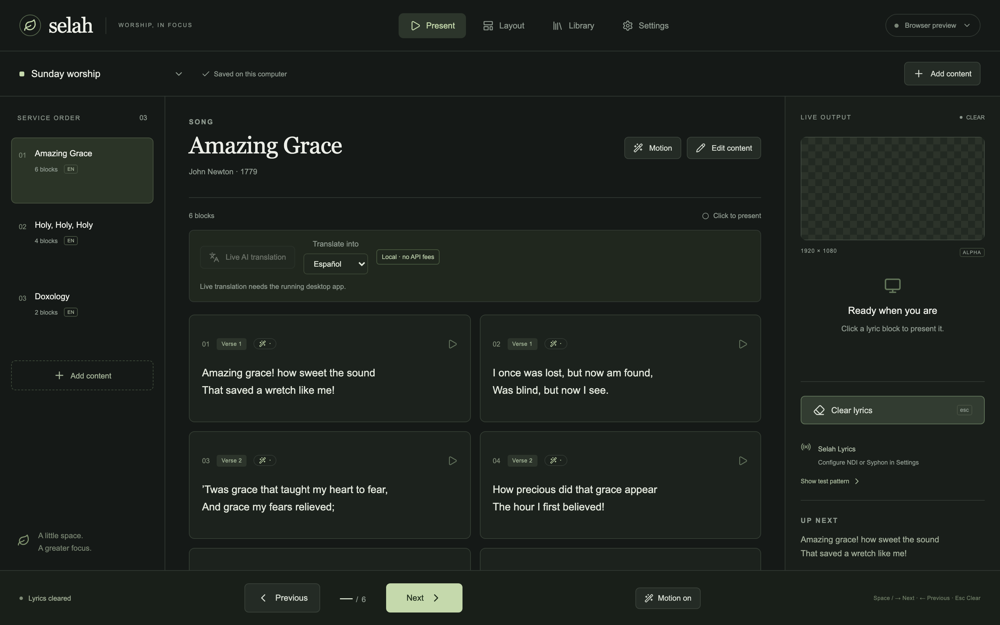
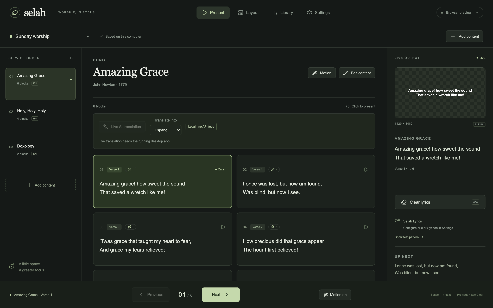
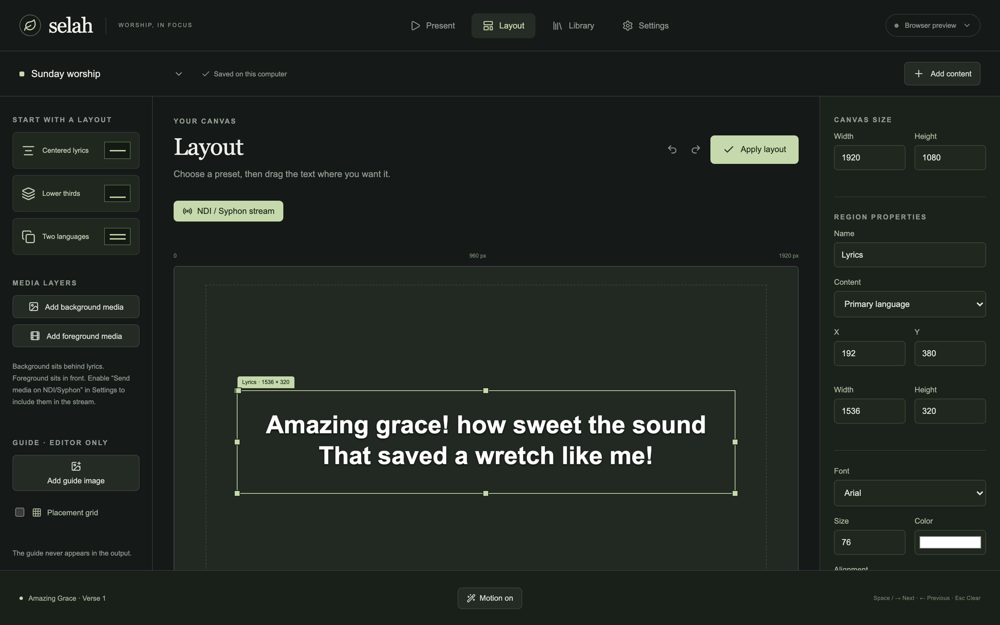
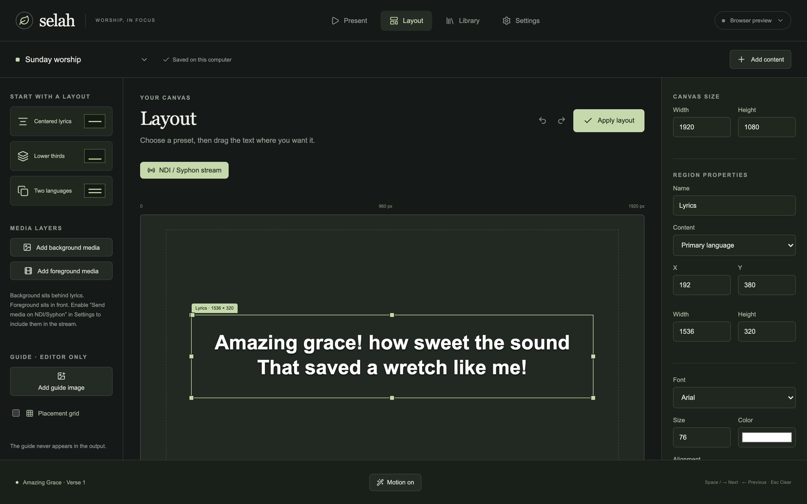
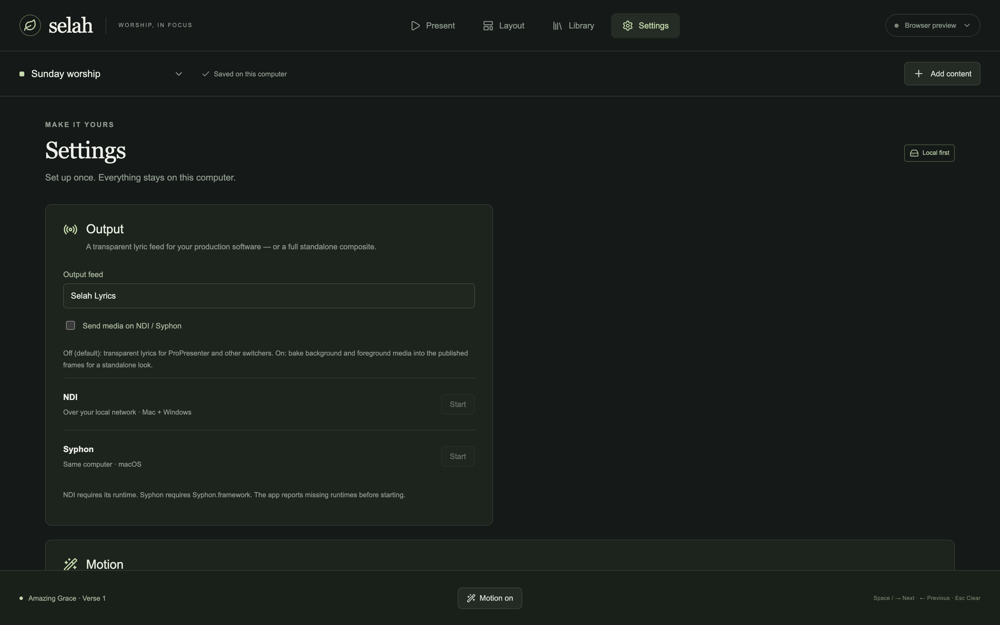

How to install Selah, present lyrics, add background and foreground media, and feed transparent lyrics into ProPresenter over NDI or Syphon. Screenshots below are from the real Selah interface.
Version 0.1.0 · For Sunday volunteers and tech teams · macOS Apple Silicon
1. Install from the DMG
Open Selah_0.1.0_aarch64.dmg from the GitHub Release.
Drag Selah into Applications.
Keep Selah-Volunteer-Guide.pdf from the same disk image near the booth laptop.
First launch may ask to allow an unsigned app: System Settings → Privacy & Security → Open Anyway.

Figure 1. Selah Present view after install — service order, lyric blocks, and live preview.
2. Volunteer quick start — present a song
Open Selah. Your last service restores automatically.
In Present, click a lyric block to put it on air (green “On air”).
Press → / Space for next, ← for previous, Esc to clear.
Use Add content for songs, paste, OpenLyrics, or Scripture.

Figure 2. Amazing Grace Verse 1 on air — live alpha preview on the right, Next in the transport bar.
Golden rule: Nothing goes to the congregation until you click a block (or start a test pattern). Browsing the library does not put lyrics on air.
3. Layout — where lyrics sit
Open Layout.
Choose a preset (centered, lower-third, bilingual) or drag regions on the canvas.
Click Apply layout. Live items keep the previous layout until you present again.

Figure 3. Layout editor — presets, canvas, and region properties for the NDI / Syphon stream.
4. Background & foreground media
Selah can show an image or video behind lyrics and another in front of lyrics. The physical display always shows this composite. NDI/Syphon only include media when you turn that on in Settings.
In Layout, use Add background media or Add foreground media.
Pick an image (PNG/JPEG/WebP) or video (MP4/MOV/WebM).
Adjust opacity, fit, and for video: mute and audio output device.
Apply the layout. Start Display output in Settings for a full-screen standalone screen.

Figure 4. Media Layers in the Layout sidebar — background and foreground controls above the canvas.
5. Library
Open Library to browse saved songs and Scripture, search locally, and add items to the service.
Figure 5. Library — your collection ready for this Sunday.
6. ProPresenter integration (NDI / Syphon)
Selah does not remote-control ProPresenter. It sends a lyric video feed that ProPresenter (or any NDI/Syphon receiver) can use as an input source.
Open Settings → Output.
Leave Send media on NDI / Syphonunchecked for transparent lyrics (recommended with ProPresenter).
Set the feed name (default Selah Lyrics).
Click Start on NDI (network) and/or Syphon (same Mac).
In ProPresenter, add an NDI or Syphon input / source and select the Selah feed.

Figure 6. Settings → Output — feed name, Send media toggle, and NDI / Syphon Start buttons.
When to enable “Send media on NDI / Syphon”: Use it for a portable standalone output (media + lyrics baked together). Leave it off when ProPresenter or a switcher should supply the background.
7. Volunteer cheat sheet
Go live Click a lyric block
Next / previous →Space / ←
Clear Esc
Toggle motion T
Outputs Settings → Start NDI / Syphon
Standalone screen Settings → Start display output
Media Layout → Add background / foreground
ProPresenter Transparent feed → NDI/Syphon input
8. Troubleshooting
NDI missing: Install the NDI runtime, then restart Selah.
Syphon missing: Install Syphon.framework in /Library/Frameworks (macOS only).
No lyrics in ProPresenter: Confirm Selah shows On air, the feed is Started, and the feed name matches.
Video has no sound: Unmute the media layer and pick an audio output device.
Unsigned app blocked: Privacy & Security → Open Anyway.